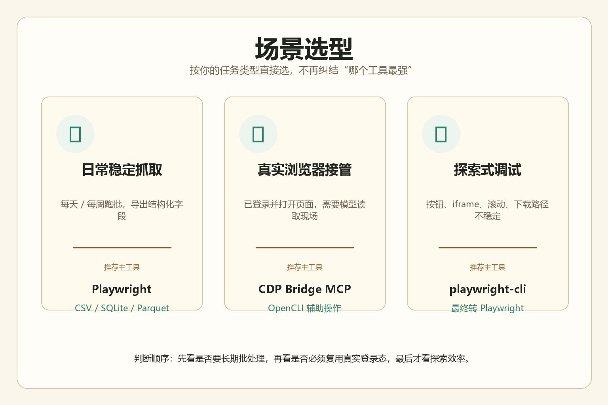

Playwright CDP
用 `chromium.connectOverCDP('http://127.0.0.1:9223')` 连接固定 Chrome，负责长流程、截图、上传、等待、DOM/HTML/文本提取。
真正稳定的工作流，不是一次命令成功，而是能被别人接手、能复现、能留证据、能解释失败原因。
第一条：不要把“能打开网页”“能连端口”“能跑一次脚本”误认为已经形成稳定工作流。长期能用的东西必须有固定入口、验证命令、截图证据、失败判断和交接文档。
第二条：浏览器自动化的根是固定 Chrome。当前固定登录态 profile 是 `C:\Users\64998\.opencli\chrome-profile`，固定 CDP 是 `http://127.0.0.1:9223`。不要用普通 Chrome、临时 profile 或 Profile 1 替代。
第三条：`9223` 通，只说明 Chrome 原生 CDP 通，不说明插件、点击、CDP Bridge 都通。真实验收必须看完整链路。
第四条：所有测评、横评、实测、benchmark 必须截图。截图不是装饰，是证据。
这些图来自之前的 Chrome-only 横评，适合直接给新线程做视觉索引。


工具不是越多越好，关键是别混用职责。
用 `chromium.connectOverCDP('http://127.0.0.1:9223')` 连接固定 Chrome，负责长流程、截图、上传、等待、DOM/HTML/文本提取。
`18765/18766` 负责读当前真实标签页、执行 JS、截图。sessions 空不一定坏，可能只是扩展还没重连。
适合快开、快查、快抽。不要把它当成复杂数据生产线。
找 selector、试流程、看 iframe，再把结论沉淀到正式 Playwright 脚本。
用于 `/json/version`、`Runtime.evaluate`、`Page.captureScreenshot` 等底层验证，不适合多人长期维护。
可做交互辅助，但不当主爬虫。插件可用不等于 CDP Bridge 可用。
宣传文案只能当线索，必须安装、跑最小例子、截图、记录版本和失败点。
| 工具 | 状态 | 结论 | 风险 |
|---|---|---|---|
| Scrapegraph-ai | 可研究 | AI 语义抽取思路有价值，但成本、速度、稳定性必须实测。 | Token 成本、动态页、结果可重复性。 |
| rust-clawer | 待测 | 文章存在，但公开仓库不可访问，不能正式推荐。 | 无源码、无可复现安装、无截图实测。 |
| CloakBrowser | 已装最小测试 | `cloakbrowser 0.3.30` 能打开 `example.com` 并截图，使用自带 Chromium。 | 高风险 anti-detect 工具，只做合规普通页面自动化评测。 |
| BeautifulSoup / Regex / Trafilatura / Readability | 基础工具 | 它们是内容抽取工具，不是 MCP，也不是浏览器操控工具。 | 适合静态页和正文抽取，不适合复杂登录态浏览器任务。 |
这次又补测了一批更接近“浏览器操控/网页抽取”的能力，下面这些可以进入后续横评。
| 名称 | 类型 | 本轮实测 | 适合场景 | 结论 |
|---|---|---|---|---|
| Playwright MCP | MCP | 已打开本地 HTTP 页面，成功导出 snapshot、console、full-page screenshot。默认禁止 `file://`，需用本地 HTTP。 | 网页验证、UI 测试、截图、DOM 可访问性快照、表单操作。 | 强烈建议保留，作为 Codex 内直接可用的浏览器 MCP。 |
| AnySearch | Skill / CLI | `extract https://example.com` 成功返回 Markdown。 | 搜索、事实核查、公开 URL 正文抽取。 | 建议保留，适合作为搜索和 URL extract 层。 |
| canghe-url-to-markdown | Skill / Chrome CDP | 成功抓取本地 HTML 并保存 Markdown；但中文页面输出出现 mojibake。 | 网页转 Markdown、登录态页面等待后抓取。 | 可用但中文编码要复核；适合进入“待优化”列表。 |
| Bright Data MCP | MCP | `discover` 成功搜索浏览器自动化 MCP 候选。 | 外部工具发现、搜索补充、市场调研。 | 适合作为联网发现层，不替代实际浏览器操控。 |
| Apify skill | Skill / Cloud Actor | 本轮只读了技能说明，未跑 Actor；需要 APIFY_TOKEN 和成本控制。 | 云端规模化采集、平台 Actor、并发、代理、调度。 | 值得保留，但必须设结果上限和成本警戒。 |
能不能做和该不该做是两件事。工具越强，边界越要清楚。
明文密钥只放：
.env
工具配置文件
Windows Credential Manager
记忆里只写：
工具名
用途
路径
登录状态
以后不要再问用户纯网页不要先买 VPS。先把部署问题做简单，再考虑服务器。
纯静态网页、HTML 专题页、前端 App 的首选。免费、快、少维护。
小 API、表单、webhook、轻量代理优先用它，别急着买 VPS。
真要 Linux VPS，优先试 Oracle 免费机，但注册和容量可能麻烦。
Google Cloud 免费 VPS 是 e2-micro，小测试够用，不是强力 2 核。
不要只看 README，也不要只看一次命令成功。
1. 查真实性
2. 安装
3. 跑最小例子
4. 截图
5. 记录版本和路径
6. 说明适合场景
7. 说明风险和边界
8. 写入交接/记忆复制这段给新线程，就能让它先站在正确的地基上。
请先读取并遵守：
F:\codex\docs\browser-automation-handoff-2026-05-26.md
F:\codex\docs\browser-crawler-tool-inventory.md
F:\codex\docs\thread-operation-protocols.md
默认基座是固定 Chrome：
C:\Users\64998\.opencli\chrome-profile
http://127.0.0.1:9223
优先 Node Playwright connectOverCDP。
CDP Bridge 读当前真实 tab、执行 JS、截图。
OpenCLI 做快速 open/state/find/extract。
playwright-cli 做 selector 和流程探索。
raw CDP 只做底层排障。
Codex Chrome 插件只做交互辅助，不当主爬虫生产线。
验收前必须跑：
& 'F:\codex\tools\verify-codex-fixed-chrome.ps1' -RestartIfMissingExtension
测评、横评、实测、benchmark 必须截图，并报告截图路径。
不要打开普通 Chrome、临时 profile、Profile 1 来替代固定 Chrome。
不要清 cookies、不要移动登录态、不要泄露 token/cookie/websocket URL。
禁止把 CAPTCHA、Cloudflare、Turnstile、reCAPTCHA 或未授权访问绕过作为测试目标。